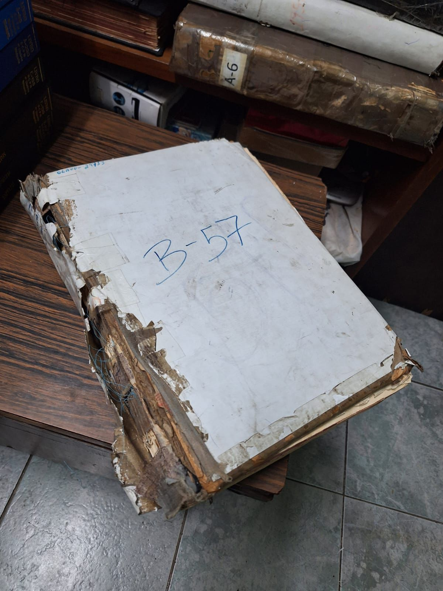
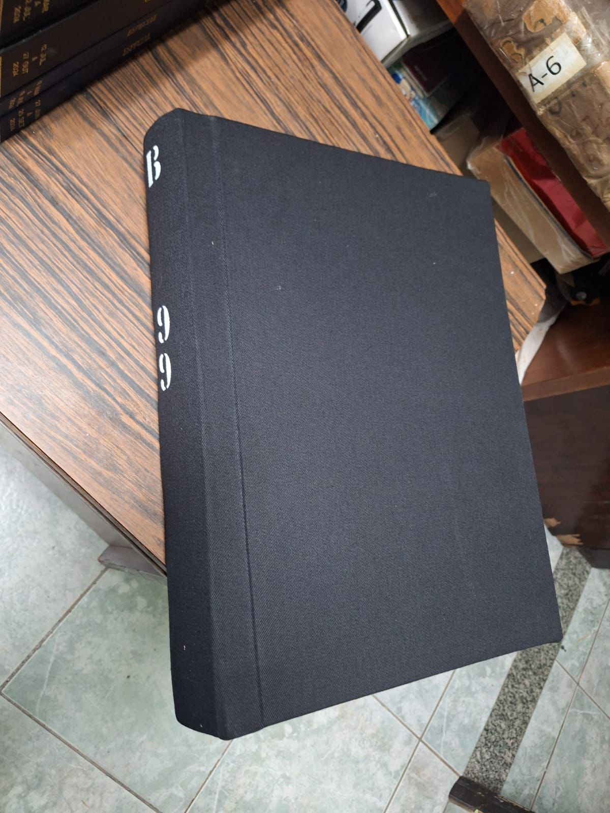
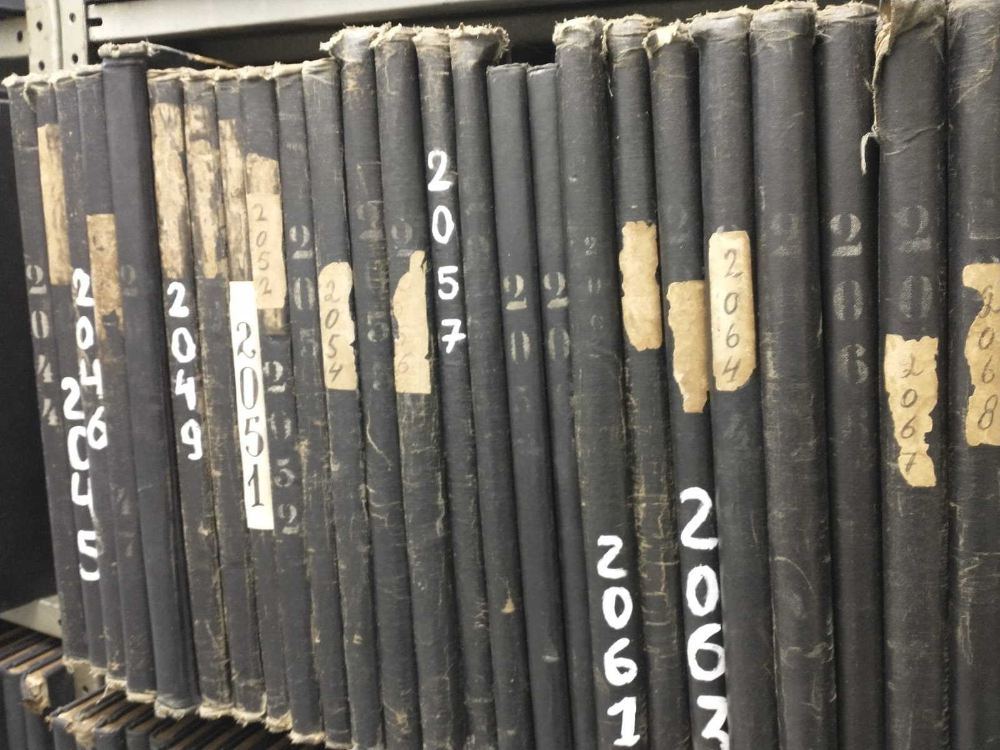
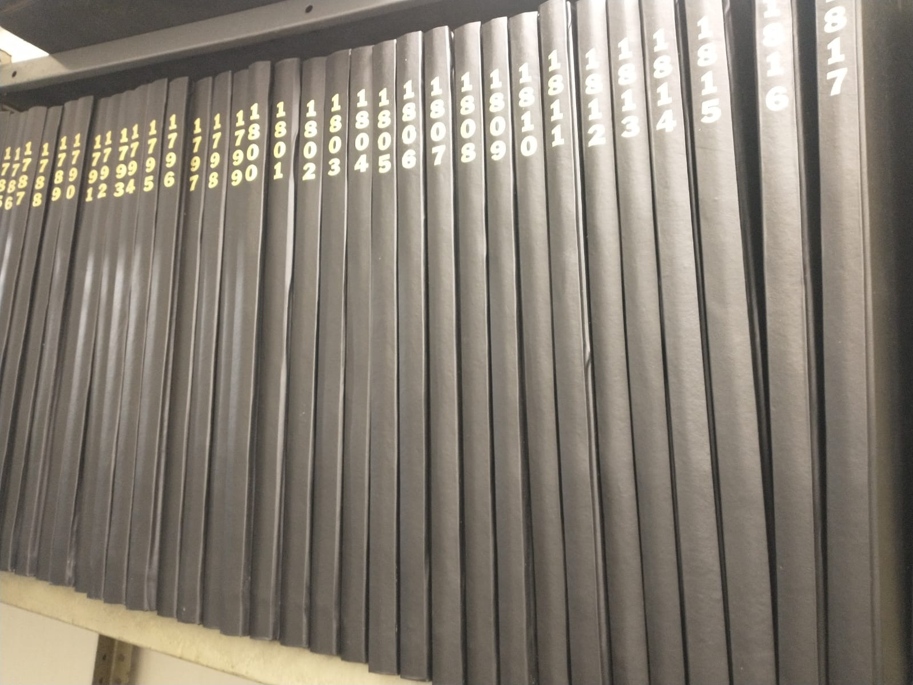

Encadernação de Registros
Restauração de Capas
Indexação Inteligente com IA Local (Ollama)
Digitalização de Alta Performance (CZUR Pro)
Nosso Trabalho na Prática

Antes: Estado de Deterioração
Um livro de registro histórico em estado crítico, com a integridade física comprometida pelo tempo e manuseio.

Depois: Restauração Profissional
O mesmo livro, totalmente restaurado com nossa encadernação de capa dura em tecido, garantindo proteção e durabilidade.

Antes: Estado de Deterioração
